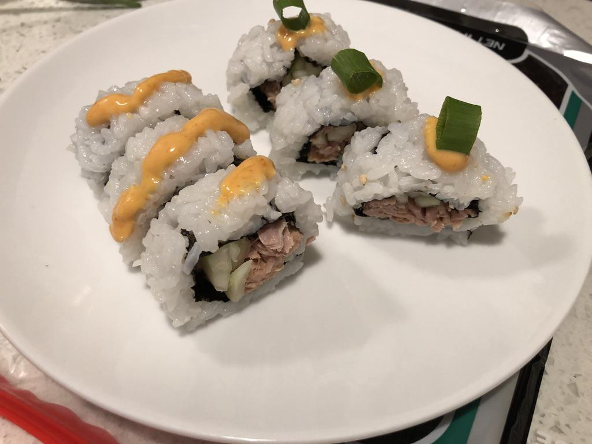

Based on https://makemysushi.com/Recipes/canned-spicy-tuna-sushi-roll-twist
Personal rating: 1 / 5

1 Tbsp mayo
1 tsp Chili sauce (Sriracha)
1 tsp toasted sesame oil
1/2 tsp lemon juice (optional)
spoon of masago (fish roe) (optional)
a bit of soy sauce (optional)
can tuna
sesame seeds
cucumber
2 green onions, cut into thin rounds for topping
sushi rice
nori
Mix the sauce, then add and mix with the canned tuna
Cut the Nori sheet in half. Spread rice over the nori and top with sesame seeds, then flip rice side down
Add the spicy tuna and cucumber and roll
Top with a dab of spicy mayo and green onion round